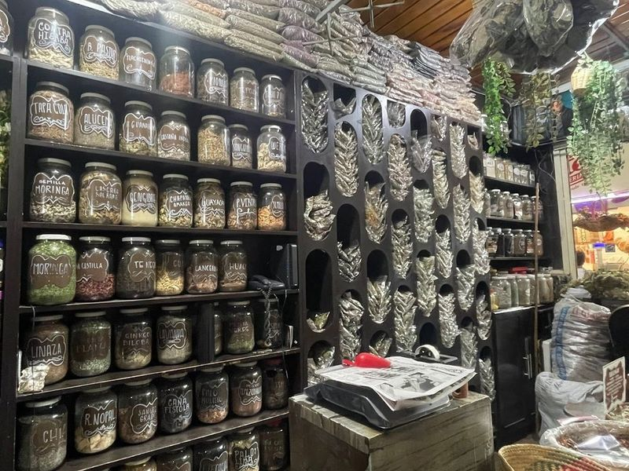
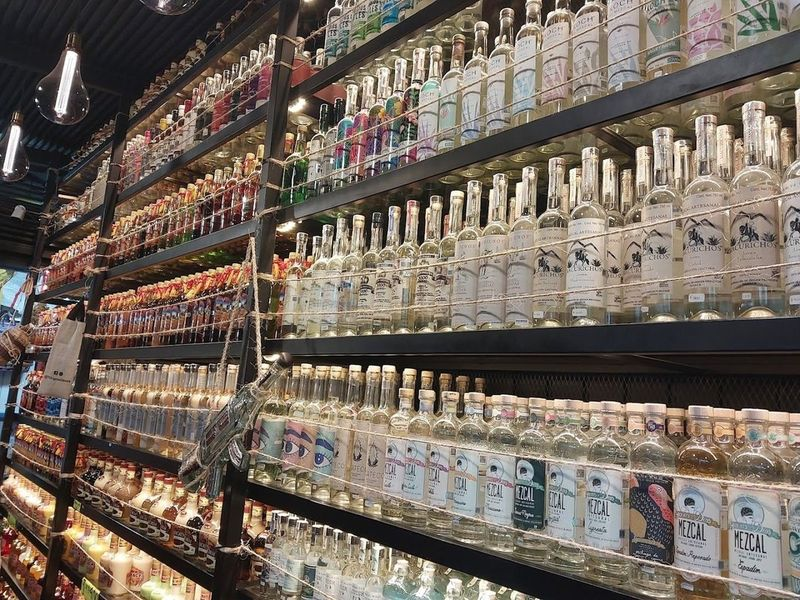
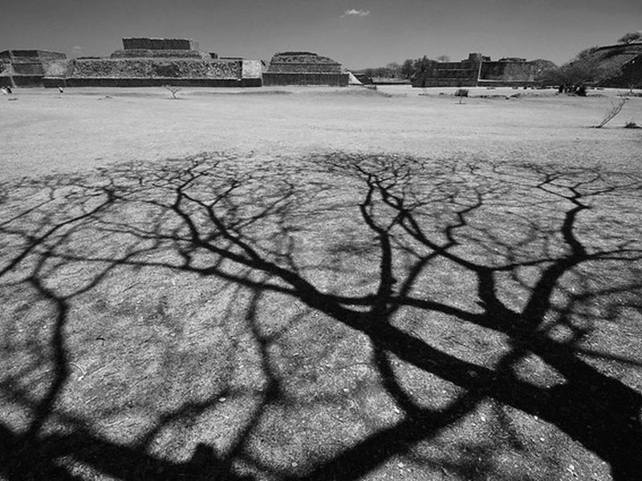
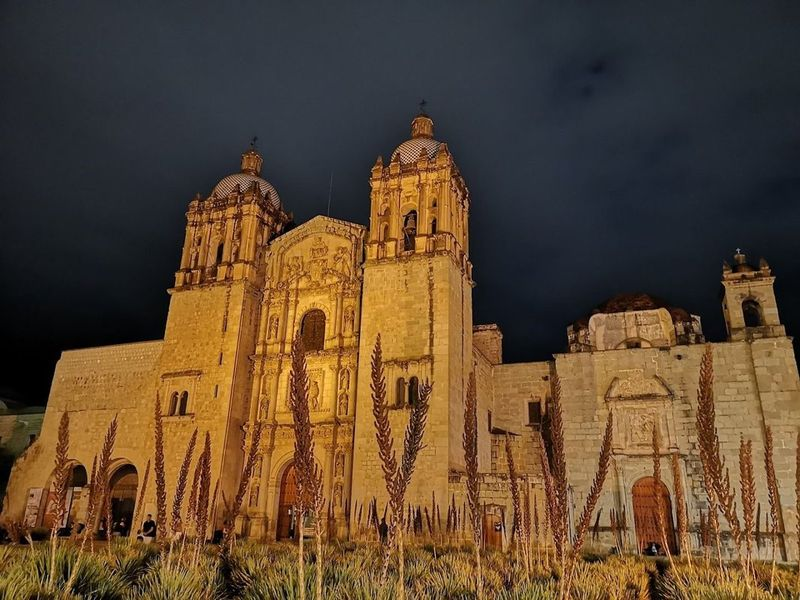
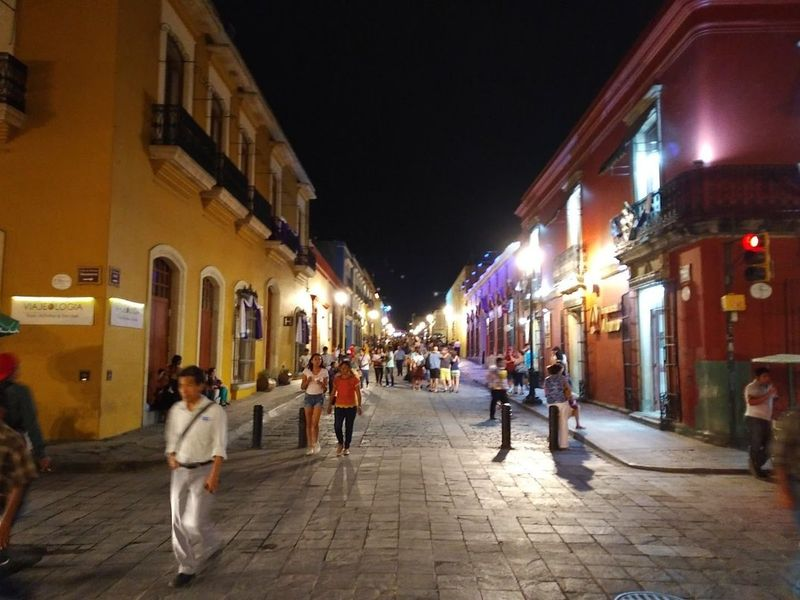
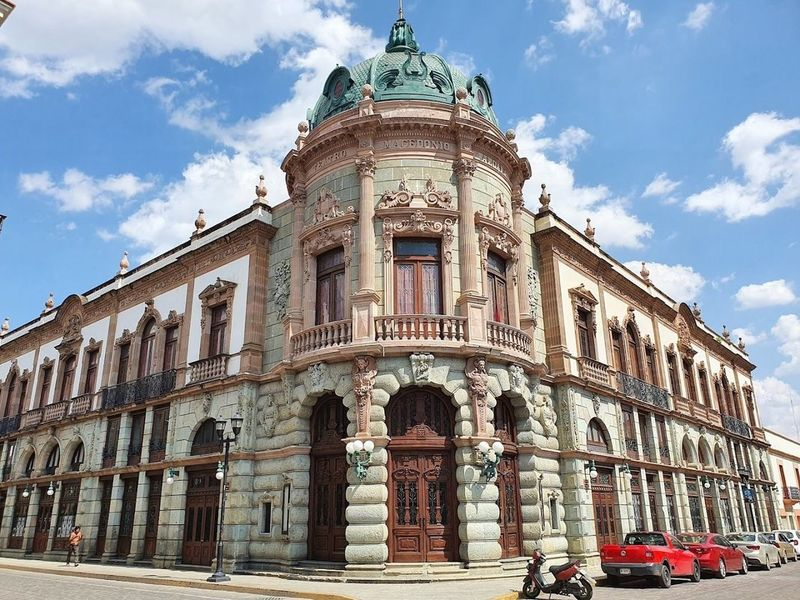
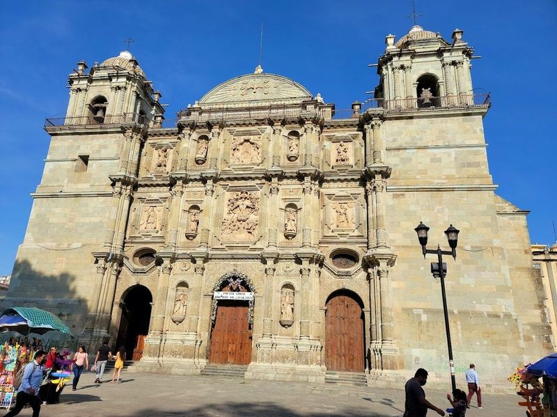
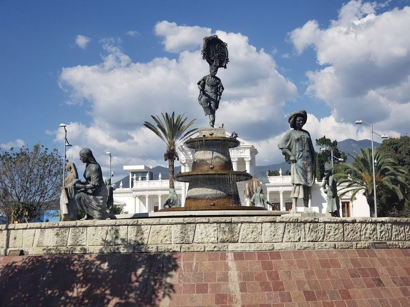
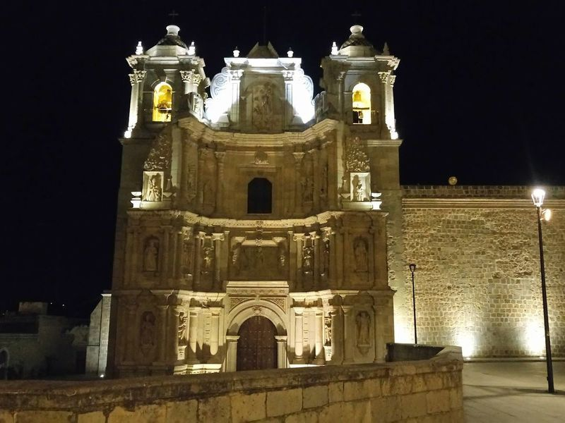
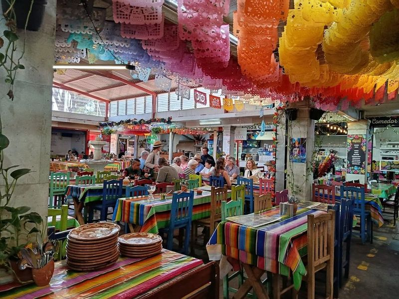

Explore Oaxaca
A Brief History
Oaxaca developed around a Zapotec and Mixtec hinterland that supplied Monte Albán and Mitla centres. Spanish colonial churches, Zócalo arcades, and nearby archaeological zones record how indigenous polities persisted under viceregal rule in southern Mexico. Monte Albán ridge temples and mezcal valleys extend Zapotec heritage beyond the colonial city grid.
Attractions Map
Top Sights & Activities

Mercado Benito Juárez
Mercado Benito Juárez is a bustling covered marketplace in Oaxaca City, offering a wide array of goods and local products. It's known for its atmosphere and diverse offerings, including produce, prepared foods, crafts, textiles, and folkloric fabrics. Adjacent to it is Mercado 20 de Noviembre, where find artisanal items like hand-crafted huaraches and elaborately embroidered blouses.

Mercado 20 de Noviembre
Mercado 20 de Noviembre is a bustling traditional covered market in Oaxaca City, Mexico. It offers a wide variety of goods, including fresh produce, baked goods, and local street foods. Adjacent to the market are stalls selling artisanal products such as hand-crafted huaraches and elaborately embroidered blouses. The market is known for its diverse offerings and indigenous influence, with vendors speaking a variety of languages including Spanish.

Zona Arqueológica de Monte Albán
Zona Arqueológica de Monte Albán is listed among principal sites for Oaxaca within Mexico. Municipal and regional heritage listings document its place in the historic centre and travellers routes through Oaxaca. Zona Arqueológica de Monte Albán is listed among principal sites for Oaxaca within Mexico.

Templo de Santo Domingo de Guzmán
Templo de Santo Domingo de Guzmán is a historic complex in Oaxaca, Mexico, featuring a church with an opulent, gilded interior and a monastery turned museum. The temple is an example of baroque Hispanic architecture and has been the site of significant historical events. It was declared a World Heritage Site by UNESCO. Visitors can also explore the nearby Botanical Gardens to see a variety of plant species typical of the region.

Andador Turístico
Andador Turístico is a pedestrian lane in Centro, offering a delightful stroll through colorful surroundings. The area is lined with an array of stores, including craft shops, galleries, and coffee shops serving gourmet Oaxacan coffee. Visitors can enjoy people-watching and explore the street art while taking in the local culture. It's a great place for leisurely walks, admiring beautiful churches, and browsing through the offerings of local vendors.

TEATRO MACEDONIO ALCALÁ
Teatro Macedonio Alcalá is an elegant early-1900s building that houses a magnificent theater hosting performing arts and cultural events. The construction of this beautiful French-style structure began in 1903 and was completed in August 1909, later being inaugurated on September 5 of the same year. Formerly known by different names, it was eventually named after Oaxacan musician and composer Macedonian Alcala.

Catedral Metropolitana de Oaxaca Nuestra Señora de la Asunción
The Catedral Metropolitana de Oaxaca Nuestra Señora de la Asunción is a historic landmark that began construction in 1535 and was consecrated in 1733. It houses baroque pieces and treasures, making it a significant cultural site. Located just north of the Zocalo, the cathedral has undergone reconstruction following earthquakes in the 16th and 18th centuries.

Fuente de las 8 Regiones
The Fuente de las 8 Regiones in Oaxaca is aesthetically pleasing, although it suffers from widespread graffiti. Despite its visual appeal, the fountain can be somewhat unease-inducing at night as it becomes a makeshift shelter for those awaiting near the hospital. However, there are advantages to visiting this location, such as observing the traditional attire of people gathered around the fountain and easy access to numerous public buses in proximity.

Plaza de la Danza
Plaza de la Danza is a significant square in Oaxaca City, located near the base of Cerro del Fortin hill. It was built in 1959 with local volcanic stone and serves as a venue for art exhibitions, political rallies, music performances, and traditional dance events. The square is also known for its enormous sand tapestries during Dia de Muertos.

Mercado de La Merced
Mercado de La Merced is a bustling covered market in Mexico, known for its wide variety of offerings. At the entrance and exit, women from the countryside sell an array of produce and traditional items. Inside, visitors can find tamale dough, queso fresco, Oaxacan oregano, tasajo beef, and different varieties of Oaxacan chocolate. The market also features food stalls offering delicious Mexican cuisine like tlayudas.